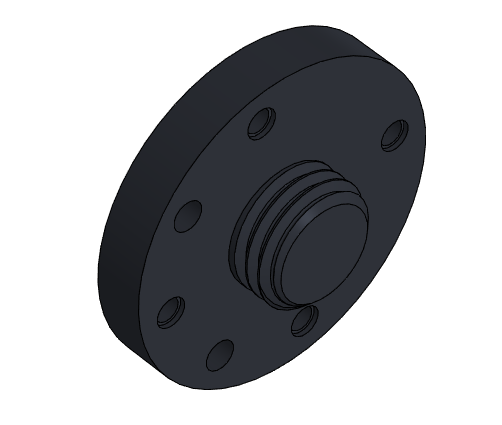
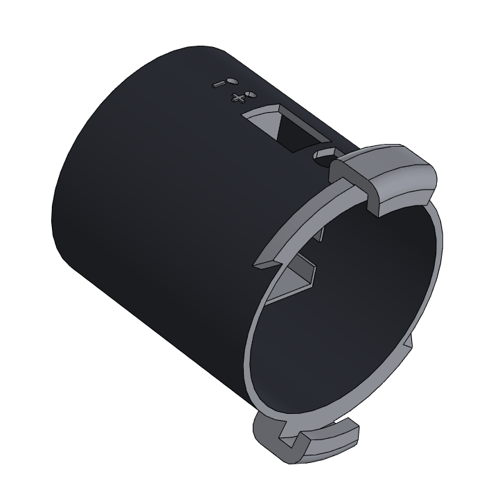
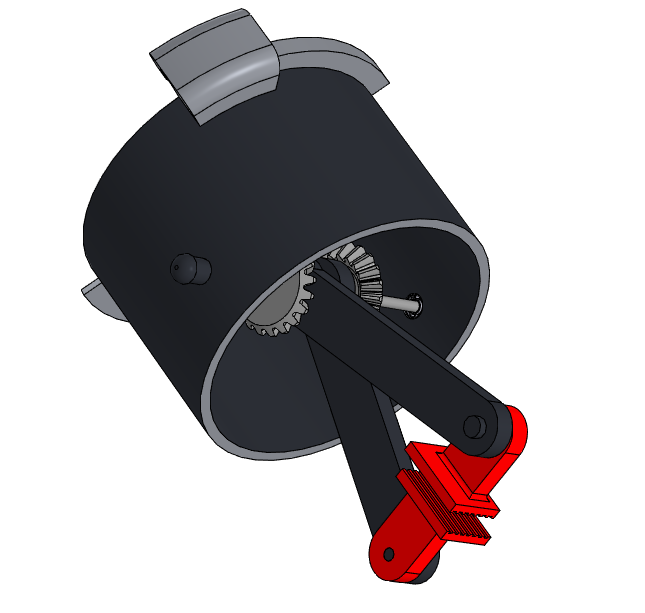

Адаптивный модульный захват для коллаборативных роботов
Один силовой корпус и набор сменных насадок вместо отдельной оснастки под каждый формат продукции. Конструкторская документация открыта: модели, схемы и код доступны для самостоятельного изготовления.
Проблема и решение
Сегодня
Каждый захват проектируется под конкретную геометрию продукции. Новый формат означает новое проектирование, изготовление и поставку; оригинальные промышленные захваты стоят от сотен до тысяч долларов, а замена требует остановки линии.
Предлагаемый подход
Универсальный цилиндрический корпус с приводом и электроникой остаётся на манипуляторе. Рабочие органы меняются байонетным замком за считанные секунды, без ключей и инструмента.
Доступность
Прототип напечатан из PLA на комплектующих широкого применения: ESP32, MG996R, Li-Ion 18650.
Открытость
Модели STL/STEP, схемы, исходный код ESP32 и инструкции по созданию собственных насадок.
Масштабируемость
Для промышленности предусмотрен переход на PETG, ABS, PA и алюминиевые сплавы Д16Т, В95.
О проекте
Цель — разработать универсальный модульный захват для коллаборативных роботов с быстрой адаптацией под разные производственные задачи за счёт сменных модулей.
Обусловленность
Запрос на автоматизацию существует практически на каждом предприятии Беларуси — об этом говорит заведующий лабораторией робототехнических систем ОИПИ НАН Беларуси Владислав Сычев. На ОАО «Малоритский консервноовощесушильный комбинат» для двух роботов Elite Robots CS625 потребовалось пять захватов под тару от банок 100 мл до бутылок 1 л: единый инструмент не подошёл.
Анализ решений ООО «Системы промышленной автоматизации» показывает, что практикуются кастомные захваты (например, вакуумно-механические для паллетирования). У такого подхода три ограничения:
- Узкая специализация. При смене номенклатуры заказывается новая оснастка.
- Рост затрат на переналадку. Несколько захватов на один манипулятор удорожают ячейку и усложняют обслуживание.
- Импортная зависимость. Базовые узлы поставляются зарубежными дистрибьюторами (OnRobot, EasyRobotics, Zimmer Group).
Задачи
- Разработать прототип универсального захвата и сменных модулей.
- Обеспечить себестоимость, доступную учебным лабораториям и малым предприятиям.
- Организовать открытую экосистему для обмена конструктивными решениями и программным обеспечением.
- Рассмотреть варианты поддержки и пути финансирования производства.
- Оценить экономическую целесообразность внедрения на предприятиях реального сектора (см. калькулятор).
Этапы реализации
| № | Этап |
|---|---|
| 1 | Анализ рынка промышленной оснастки и потребностей предприятий Беларуси |
| 2 | Принципиальная кинематическая и электрическая схемы |
| 3 | 3D-модели пальцев и силового корпуса с минимизацией массы и расхода материала |
| 4 | Подбор элементной базы электронного модуля |
| 5 | ПО для беспроводной связи и настройки параметров зажима |
| 6 | Представление наработок научным руководителям: экспертное мнение, финансирование прототипирования |
| 7 | Печать опытных образцов, сборка электроники |
| 8 | Испытания в лаборатории робототехнических систем университета |
| 9 | Интеграция в учебный процесс |
| 10 | Открытая база конструктивных решений и ПО |
| 11 | Презентация на молодёжных конкурсах и конференциях, привлечение финансирования для масштабирования |
Внедрение
Учебный процесс
Специальность «Робототехнические системы» ГрГУ: кинематика манипуляторов, беспроводное управление, прототипирование.
Профориентация
Демонстрация лаборатории абитуриентам и школьникам на днях открытых дверей и мастер-классах.
Студенческие практики
Решение реальных задач автоматизации на предприятиях Гродно без больших затрат.
Конкурсы и конференции
Республиканские и международные стартап-конкурсы, выставки: экспертная оценка и поиск финансирования.
Конструкция
Модель и сборка выполнены в КОМПАС-3D: соответствие ЕСКД, расчёт кинематических пар, подготовка деталей к послойной печати.

Крепление к оси робота
Резьбовое соединение с корпусом: жёсткая фиксация, выдерживает знакопеременные нагрузки, вибрации и крутящие моменты.

Несъёмная часть
Цилиндрический корпус с электронным модулем. Несущая перекладина держит защитный корпус привода: ось вала привода совпадает с осью вала насадки.

Съёмная часть
Байонетно-поворотный замок: смена насадки за секунды, без инструмента.
Линейка сменных насадок
Передача:
Рабочий ход: мм
Шкала — относительно максимального хода линейки (47 мм)
Материалы изготовления
| Материал | Назначение |
|---|---|
| PLA | Опытный образец: доступность, экологичность, минимальная усадка |
| PETG, ABS, PA (нейлон) | Опытно-серийное производство: ударопрочность, термо- и химическая стойкость |
| Д16Т, В95 (алюминиевые сплавы) | Высоконагруженные операции: ЧПУ-фрезерование или селективное лазерное спекание |
Электроника и управление
Автономное питание, беспроводное управление и точное позиционирование привода на доступных компонентах.
| Компонент | Параметры | Назначение |
|---|---|---|
| Аккумулятор Li-Ion 18650 | 1300 мАч, 3,6 В | Автономное питание |
| Плата защиты BMS 2S 20A | 7,4–8,4 В | Защита от перезаряда, глубокого разряда и КЗ |
| Преобразователь HW-613 | понижающий | Стабилизация напряжения для логики и привода |
| Микроконтроллер ESP32 Super Mini | Wi-Fi, Bluetooth | Обработка команд, логика, беспроводное управление |
| Сервопривод MG996R | исполнительный механизм | Движение рабочих органов захвата |
| ИК-приёмник TSOP31238 | 38 кГц, до 45 м | Приём команд дистанционного управления |
Режимы управления
Ручной: оператор регулирует сжатие кнопками на несъёмной части.
Дистанционный: команды с ИК-пульта через приёмник. Система обеспечивает плавное смыкание и разведение рычагов с заданным усилием.
Перспективы модернизации
- Более ёмкие и компактные аккумуляторы
- Собственная печатная плата, скрытое размещение в корпусе
- Энергоэффективные чипы с защищёнными протоколами для промышленного IoT
- Более гибкие рабочие органы для тяжёлых грузов и миниатюрных деталей
- Новое ПО и интерфейс оператора
Единый открытый реестр
Банк проверенных конструкторских решений. Просмотр паспортов открыт всем; загрузка наработок и скачивание исходников — после входа.
Требуется вход
Для подачи модуля на экспертную проверку и скачивания CAD-файлов.| Автор | Насадка | Передача | Ход | Файлы | Статус |
|---|
Состав открытой базы
3D-модели
Корпус и насадки для самостоятельной печати.
STLSTEPДокументация
Электрические схемы, спецификации, компоновочные чертежи.
ЕСКДPDFПрограммный код
Исходный код микроконтроллера ESP32.
ESP32Инструкции
Сборка, наладка и создание собственных насадок.
РуководствоИнженерные инструменты
Расчётные и справочные средства для проектирования, подготовки документации и оценки экономического эффекта.
Подбор насадки
Рекомендация по типу захватываемого объекта.
Экономика: модульный захват и отдельные захваты
Значения по умолчанию иллюстративные — подставьте свои.
Допуск байонетного замка (FDM)
Ориентировочный зазор с учётом усадки пластика. Окончательно подбирается по пробной печати.
Спецификация по ГОСТ 2.106
Заготовка спецификации сборочной единицы для переноса в КОМПАС-3D.